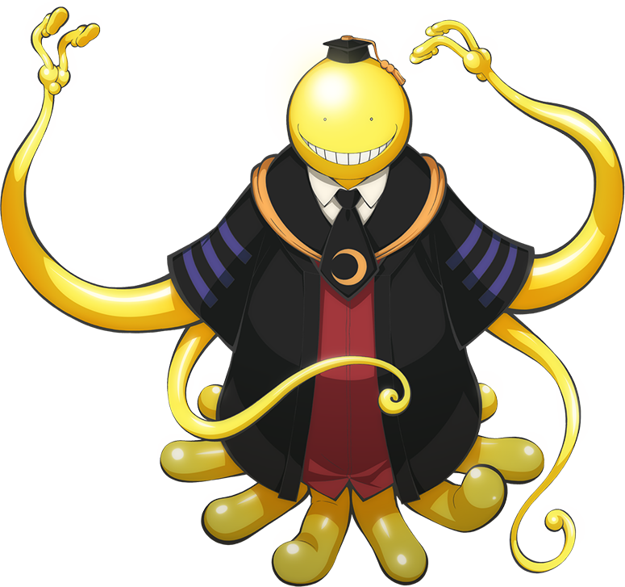
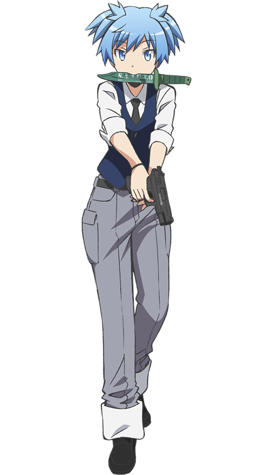

- 作者 松井優征
- 『週刊少年ジャンプ』(集英社)
- 2012年から2016年まで連載
私は趣味で漫画を読むことがとても大好きでいろいろな作品を読んでいる。その中で何度も読み返しており、ずっと好きな作品、
暗殺教室を紹介しようと思う。
ある日突然、進学校「椚ヶ丘中学校」の成績不良を集めた隔離校舎3年E組の元に防衛省の人間と、異形な姿をした謎の生物がやって来た。
マッハ20で空を飛び、月の7割を破壊して常時三日月の状態にしてしまった危険な生物は「来年3月までに自分を殺せなければ地球を破壊
する」ことを宣言したうえ、「椚ヶ丘中学校3年E組」の担任教師とならやってもいいと希望した。そこで、防衛相から3年E組に成功報酬
100億円で暗殺を依頼する。暗殺を通して、生徒一人一人が殺せんせー（超生物）の下で成長していく物語。

「殺せない先生」という理由で、生徒達からこの名で呼ばれる謎の超生物。最高時速マッハ20のスピードと、万能の触手を持ち、 ほとんどの攻撃手段が通用しない。教師としての能力は極めて優秀。

情報収集が得意で殺せんせーの弱点を調べている。おとなしくて温厚な性格。だが、実は暗殺の才能に秀でる。